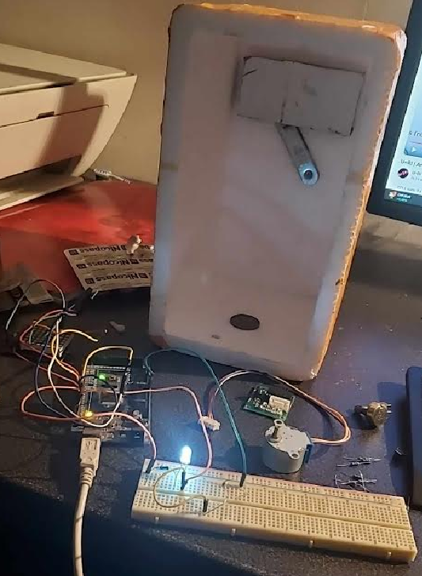
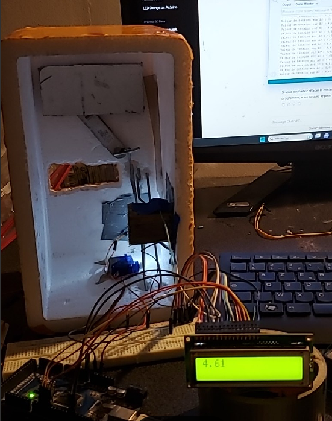
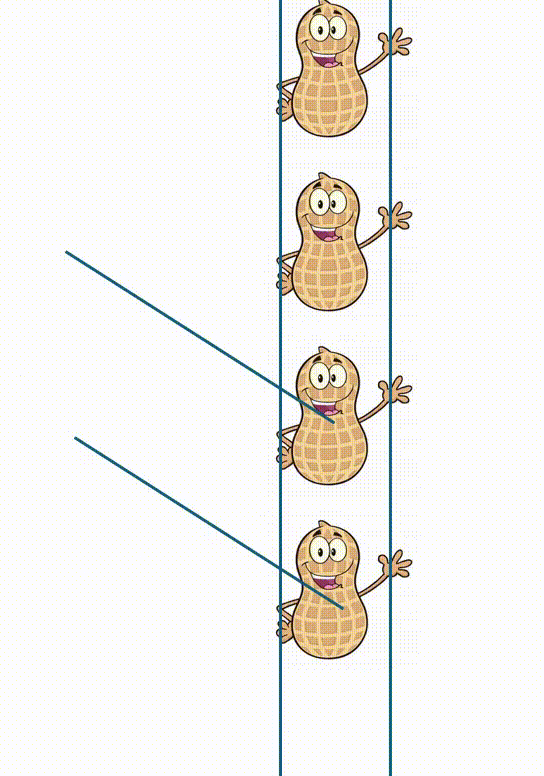
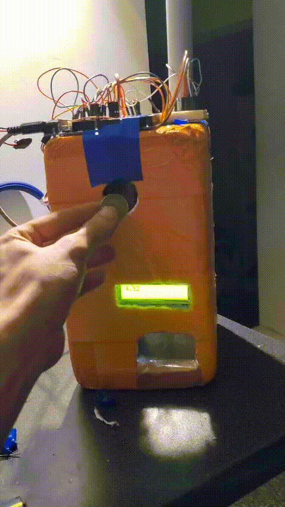

Distributeur de Cacahuètes Automatique
Projet réalisé avec mon petit frère : un distributeur de cacahuètes entièrement automatique basé sur Arduino Mega. Ce système détecte l'insertion d'une pièce grâce à un capteur optique et distribue automatiquement une cacahuète via un mécanisme à double servomoteur.
Évolution du projet


Principe de Fonctionnement
Détection de la Pièce

Le cœur du système de détection repose sur un principe simple mais efficace : une LED émet un faisceau lumineux constant vers une photorésistance.
Quand une pièce passe entre les deux, elle coupe le faisceau, ce qui fait chuter la luminosité reçue par la photorésistance. L'Arduino détecte cette variation et déclenche le processus de distribution.
Le rail guide parfaitement la pièce pour qu'elle coupe bien le faisceau lumineux.
Mécanisme de Distribution

Une fois la pièce détectée, le vrai challenge commence : distribuer exactement une cacahuète,
pas plus, pas moins. Pour cela, j'ai conçu un système à double porte :
- Servomoteur 1 s'ouvre → les cacahuètes descendent
- Une cacahuète tombe dans la chambre intermédiaire
- Servomoteur 1 se referme (bloque les autres cacahuètes)
- Servomoteur 2 s'ouvre → la cacahuète tombe
- Servomoteur 2 se referme → retour à l'état initial
Cette séquence en deux temps évite que plusieurs cacahuètes tombent d'un coup. En théorie...
En pratique, il arrive parfois que deux cacahuètes se faufilent, mais ça fait partie du charme artisanal du projet !
Composants Utilisés
Liste du matériel
- Arduino Mega : cerveau du système, gère tous les capteurs et actionneurs
- 2 Servomoteurs : contrôlent l'ouverture/fermeture des portes de distribution
- 1 LED : source lumineuse pour la détection
- 1 Photorésistance : capteur de lumière pour détecter l'obstruction
- Afficheur LCD 2 lignes : retour visuel sur l'état du système
- Structure mécanique : tube, rails, supports (bricolage maison !)
Défis et Solutions
Points clés du développement
- Calibrage de la photorésistance : trouver le bon seuil de détection selon l'éclairage ambiant
- Timing des servomoteurs : synchroniser parfaitement l'ouverture/fermeture pour éviter les bourrages
- Mécanique artisanale : ajuster les dimensions du rail et du tube pour un fonctionnement fluide
- Gestion des cas d'erreur : que faire si une cacahuète se coince ?
- Interface utilisateur : affichage clair sur l'écran LCD ("Insérez pièce", "Distribution...", etc.)
Résultat Final

Le distributeur fonctionne comme prévu ! On glisse une pièce, le système la détecte, et hop, une cacahuète tombe. Parfois deux, mais c’est un bonus inattendu. 😉
code était assez facile ; le vrai objectif était surtout pédagogique et ludique. J’ai initié mon petit frère à la programmation en lui montrant que le code, ce n’est pas sorcier : comment un simple capteur détecte une pièce, comment un moteur sait quand tourner, et comment le tout travaille ensemble. On a parlé de logique, de signaux, et de la magie (en réalité très concrète) qui fait passer une idée à quelque chose de tangible.
Résultat : il a maintenant son propre distributeur de cacahuètes… et il sait comment il marche de l’intérieur.
Collaboration avec mon petit frère oblige, on a aussi appris à se répartir les tâches : lui sur la partie mécanique et bricolage, moi sur la programmation et l'électronique. Un vrai travail d'équipe !
Améliorations Possibles
Quelques idées pour une version 2.0 :
- Ajouter un capteur de niveau pour savoir quand le tube est vide
- Intégrer un système de différanciation de pieces
- Améliorer la mécanique pour garantir une seule cacahuète à chaque fois.
- Ajouter une connexion WiFi pour un drop de cacahuète a distance.